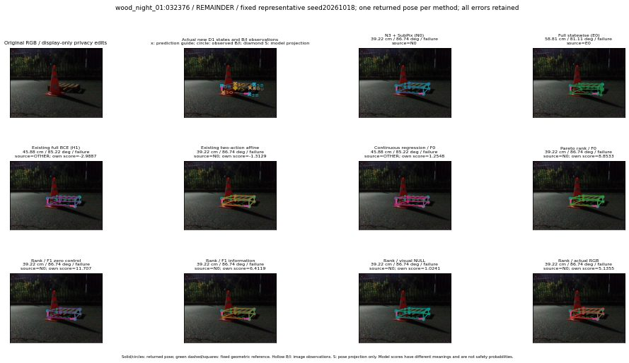

실선은 반환 자세, 초록 점선은 고정 기하 참조입니다. S는 영상 관측이 아닙니다. 점수는 모델별 의미가 다르며 보정된 안전 확률이 아닙니다. 개인정보 처리는 표시 사본에만 적용했습니다.
| 방법·seed | 위치 / 회전 / 공동성공 | 실제 출처 | 선택 후보 | 각 모델 자체 점수 |
|---|---|---|---|---|
| N0 | 39.22 cm / 86.74 deg / failure | N0 | N/A | N/A |
| E0 | 58.81 cm / 81.11 deg / failure | E0 | N/A | N/A |
| E0_REGENERATED | 58.81 cm / 81.11 deg / failure | E0 | E0_REGENERATED | N/A |
| POSEFIX_SUBPIX_PF_ANCHOR | 41.19 cm / 86.77 deg / failure | OTHER | N/A | N/A |
| POSEFIX_SUBPIX_YOLO_ANCHOR | 41.23 cm / 86.74 deg / failure | OTHER | N/A | N/A |
| D1_H1_MLP_s20261018 | 45.88 cm / 85.22 deg / failure | OTHER | WD0/ORIGINAL_WD/sample/10 | -2.9886648654937744 |
| D1_H1_MLP_s20261019 | 45.88 cm / 85.22 deg / failure | OTHER | WD0/ORIGINAL_WD/sample/10 | -3.184255838394165 |
| D1_H1_MLP_s20261020 | 45.88 cm / 85.22 deg / failure | OTHER | WD0/ORIGINAL_WD/sample/10 | -3.3352210521698 |
| D1_H1_PAIR_MLP_s20261018 | 39.22 cm / 86.74 deg / failure | N0 | N0 | -2.180623769760132 |
| D1_H1_PAIR_MLP_s20261019 | 39.22 cm / 86.74 deg / failure | N0 | N0 | -2.200374126434326 |
| D1_H1_PAIR_MLP_s20261020 | 39.22 cm / 86.74 deg / failure | N0 | N0 | -2.9708428382873535 |
| D1_H1_PAIR_ROLE_AFFINE_s20261018 | 39.22 cm / 86.74 deg / failure | N0 | N0 | -1.312920093536377 |
| D1_H1_PAIR_ROLE_AFFINE_s20261019 | 39.22 cm / 86.74 deg / failure | N0 | N0 | -1.3950120210647583 |
| D1_H1_PAIR_ROLE_AFFINE_s20261020 | 39.22 cm / 86.74 deg / failure | N0 | N0 | -1.223708152770996 |
| R_CONT_F0_s20261018 | 45.88 cm / 85.22 deg / failure | OTHER | WD0/ORIGINAL_WD/sample/10 | 1.254815936088562 |
| R_CONT_F0_s20261019 | 45.88 cm / 85.22 deg / failure | OTHER | WD0/ORIGINAL_WD/sample/10 | 1.2331877946853638 |
| R_CONT_F0_s20261020 | 45.88 cm / 85.22 deg / failure | OTHER | WD0/ORIGINAL_WD/sample/10 | 1.4195996522903442 |
| R_ORDER_F0_s20261018 | 39.22 cm / 86.74 deg / failure | N0 | N0 | 8.853255271911621 |
| R_ORDER_F0_s20261019 | 39.22 cm / 86.74 deg / failure | N0 | N0 | 3.3758866786956787 |
| R_ORDER_F0_s20261020 | 39.22 cm / 86.74 deg / failure | N0 | N0 | -11.930320739746094 |
| R_ORDER_F1_ZERO_s20261018 | 39.22 cm / 86.74 deg / failure | N0 | N0 | 11.707192420959473 |
| R_ORDER_F1_ZERO_s20261019 | 39.22 cm / 86.74 deg / failure | N0 | N0 | 4.800349235534668 |
| R_ORDER_F1_ZERO_s20261020 | 39.22 cm / 86.74 deg / failure | N0 | N0 | 5.113752365112305 |
| R_ORDER_F1_s20261018 | 39.22 cm / 86.74 deg / failure | N0 | N0 | 6.411850929260254 |
| R_ORDER_F1_s20261019 | 39.22 cm / 86.74 deg / failure | N0 | N0 | 4.648942470550537 |
| R_ORDER_F1_s20261020 | 39.22 cm / 86.74 deg / failure | N0 | N0 | 3.583207607269287 |
| V_ORDER_NULL_s20261018 | 39.22 cm / 86.74 deg / failure | N0 | N0 | 1.0241377353668213 |
| V_ORDER_NULL_s20261019 | 39.22 cm / 86.74 deg / failure | N0 | N0 | 0.45427224040031433 |
| V_ORDER_NULL_s20261020 | 39.22 cm / 86.74 deg / failure | N0 | N0 | 5.540533065795898 |
| V_ORDER_RGB_s20261018 | 39.22 cm / 86.74 deg / failure | N0 | N0 | 5.135507583618164 |
| V_ORDER_RGB_s20261019 | 39.22 cm / 86.74 deg / failure | N0 | N0 | -0.04370968043804169 |
| V_ORDER_RGB_s20261020 | 39.22 cm / 86.74 deg / failure | N0 | N0 | -6.338946342468262 |